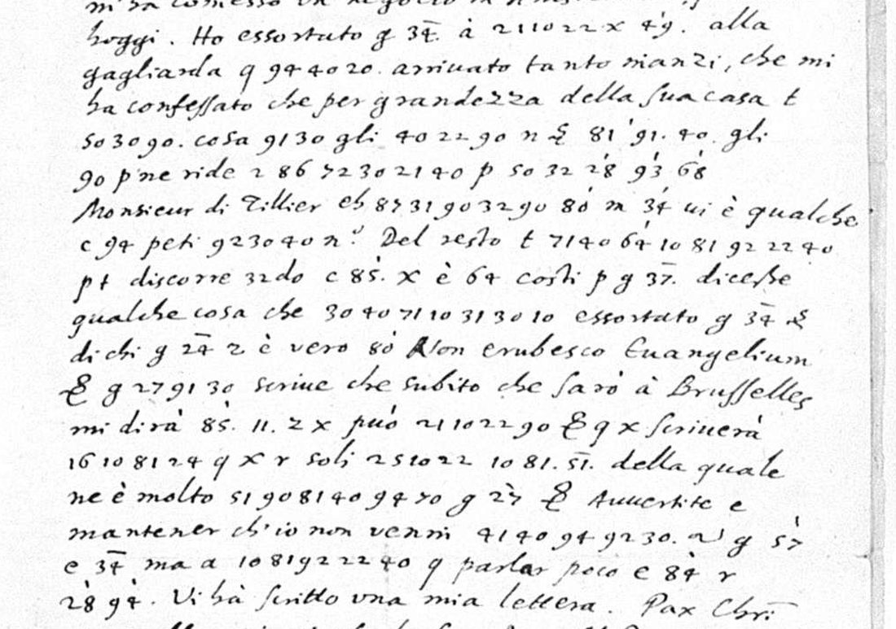

At a glanceCiphertext-only break · partial (62% of the cipher)
- The letter
- One page in Italian, dated “Haia. 8. Aprile. 1624”, signed “Franc.o Rota” and addressed to “Monsieur Vatron” in London. Cipher runs through lines 4 to 20.
- Where
- Munich, Bayerische Staatsbibliothek, Clm 10398 (Collectio Camerariana vol. 48), n. 106, fol. 233r; scan 469 of the library’s digital copy. Ledger entry 2176. Not on DECODE.
- The cipher
- Two-digit numbers stand for single letters and are mixed with clear letters inside words. Numbers with a tick above, and numbers after a letter g, c or m, stand for names and words. Single letters such as q and t stand for short words.
- How it was deciphered
- From the leaf alone. Words half in clear, such as “discorre 32 do” and “peti 92 30 40 n”, fixed the first values; sixteen letter values followed, and every complete run then spells an Italian word. The statistical validation returns “too short”; no shuffled-key control was run.
- What it says
- The writer has pressed a person in code hard and brought him to admit that “per grandezza della sua casa non vi è cosa migliore”, while the wife laughs at it. He asks his correspondent to maintain that he did not come to London for a purpose that is in code, but for something else.
- Still open
- All 25 code numbers (the people and subjects), seven numbers inside letter runs, and the single signs x, r, n, m, pt and one more. No key is known for them.
- Credit
- WAINUT found the letter in the Munich Camerariana (PR #242). Brice Dudout showed that it is not Camerarius’s code of 1621–22 (issue #254).
01 The letter
The leaf is n. 106 of Clm 10398, volume 48 of the Camerarius collection in the Bayerische Staatsbibliothek, fol. 233r; the verso is blank. It is in Italian, opens “Monsieur.”, is dated “Haia. 8. Aprile. 1624”, signed “Il Vostro Franc.o Rota” and addressed “A Monsieur Monsieur Vatron. Londre.” The first three lines and the close are in clear, apart from one & in the close; lines 4 to 20 carry the cipher.
Halm’s catalogue of the collection (1874, p. 95) lists it as “Lettera di Francesco Rota à Mr. Vatron à Londre, Haia 8 Apr. 1624 (von Lud. Cam. geschrieben, grossentheils in Chiffern)”: written by Ludwig Camerarius, largely in cipher. If so the leaf is a copy; the hand was not compared here. It differs from the hand of the next piece, n. 107, a clear letter signed “Francesco Rota”.
The ledger entry for this letter takes “Francesco Rota”, following Goetz and Gardiner, as the cover name of the Capuchin Father Alexander of Hales, who carried proposals between London, The Hague and Brussels in 1624, and suggests that “Vatron” is Rusdorf, the Palatine envoy in London. (These identifications come from the ledger’s vetting notes; they were not checked again here, and the second is a suggestion only.)

02 The cipher
Three things are written into the clear Italian. The counts are from the transcription, made once from the scan.
- Two-digit numbers for single letters, 79 of them, written together without points and often mixed with clear letters in one word: “discorre 32 do” is discorrendo, “peti 92 30 40 n” is petition(e).
- Code numbers, 25 of them: numbers with a small tick above standing alone (49, 81, 28, 93, 68, 80, 64, 85, 51, 94; 64 also once without a tick) and numbers after a letter g, c or m (g 34, g 37, g 24, g 27, g 57, c 94, c 85, c 34, c 84, m 34), some ticked, some with a bar above. They stand where a name or a noun is needed. What the tick means is not established.
- Single signs standing alone, 40 in all with the prefix letters: q, t, p, z, x, r, n, pt, & and a sign like a reversed 2.
It is not the code Ludwig Camerarius used with Count Solms in 1621–22 (a different cipher, in targets/camerarius1621): that one is a German code with numbers up to about 3200, and Brice Dudout found that only 3 of the 104 numbers here have a value in it.
03 How the key was found
There is no key and no decipherment for this leaf, on it or elsewhere. An earlier attack that treated the numbers as a code did not beat its shuffled control (issue #254). The way in was the clear text, because the writer breaks words between clear letters and numbers:
- “discorre 32 do” has clear letters on both sides of one number: 32 is n.
- “qualche … peti 92 30 40 n.” is petitione: 92 30 40 is t, i, o.
- “cosa 91 30 gli 40 22 90” is migliore, and “91 40 gli 90” is moglie: m, r, e.
- “può 21 10 22 90” is fare; “ma a 10 81 92 22 40” is altro (the word comes twice); “ne è molto 51 90 81 40 94 70” is geloso; “che 30 40 71 10 31 30 10 essortato” is io habia; “non venni 41 40 94 92 30” is costì.
| 10 | 90 | 30 | 40 | 50 | 21 | 22 | 31 | 32 | 41 | 51 | 71 | 81 | 91 | 92 | 94 |
|---|---|---|---|---|---|---|---|---|---|---|---|---|---|---|---|
| a | e | i | o | u/v | f | r | b | n | c | g | h | l | m | t | s |
These sixteen values decode 70 of the 79 letter numbers; two more, 20 as n and 70 as o, rest on one use each and are plausible only, which makes 72. Seven numbers that occur once inside letter runs (72, 86, 87, 16, 24, 25, 11) have no value. Of the single signs, q is che (four uses), t is non (two), p is per (two), p’ is però (one) and & is et (six); z as se (three) is plausible. That makes 18 signs read, three of them on the plausible z, and 90 of the 144 cipher tokens (62.5%).
The check is internal only: the same sixteen values spell far, fare, altro (twice), geloso, migliore, moglie, petitione, discorrendo, io habia, costì, bene, ho, mi, un and vi è. The project’s statistical validation returns “too short” for 72 tokens, no shuffled-key control was run, and no second reader has checked the transcription.
04 The reading
Bracketed numbers are code numbers that were not read (an apostrophe is the tick on the leaf); braces hold single signs that were not read.
Ricevo una vostra del 22 del passato. Io non sono potuto partir prima d’hoggi, perché Monsignor Nuncio m’ha commesso un negocio in Amsterdam; partirò hoggi.
Ho essortato g[34] à far {x} [49’] alla gagliarda, che son arrivato tanto inanzi, che mi ha confessato che per grandezza della sua casa non vi è cosa migliore {n}, et [81’] moglie però ne ride, se [86][72]ifo per un [28’] [93’] [68’] Monsieur di Tillier ch[87] bene [80’] m[34’] vi è qualche c[94] petitione.
Del resto non ho [64’] altro {pt} discorrendo c[85’]. {x} è [64] costì per g[37] dicesse qualche cosa, che io habia essortato g[34], et dichi g[24] se è vero. [80’] Non erubesco Evangelium.
Et g[27] mi scrive che subito che sarò à Brusselles mi dirà [85’] [11] se {x} può fare, et che {x} scriverà [16]al[24], che {x} {r} soli [25]ara l [51’], della quale ne è molto geloso g[27’], etc.
Avvertite e mantener ch’io non venni costì {~} g[57’] c[34], ma a altro che parlar poco c[84’] {r} [28’] [94’].
Vi hà scritto una mia lettera. Pax Christi, et vi abbraccio in osculo santo. Al P. Anderson etc., ma sopra tutto al Signor Conte et à quel Gentilhuomo della barba Capuccina, che mangia con voi. Haia, 8 Aprile 1624. Il Vostro Francesco Rota.
In English: “I have received your letter of the 22nd of last month. I could not leave before today, because Monsignor the Nuncio has charged me with a piece of business in Amsterdam; I shall leave today. I have exhorted g[34] to make {x} [49’] with vigour, so that I got so far that he confessed to me that for the greatness of his house there is nothing better {n}, and [81’] wife, however, laughs at it … For the rest I have not [64’] anything else {pt} while discussing c[85’]. {x} is [64] over there, so that g[37] might say something, that I have exhorted g[34]; and let g[24] say whether it is true. [80’] Non erubesco Evangelium [I am not ashamed of the Gospel]. And g[27] writes to me that as soon as I am in Brussels he will tell me … whether {x} can do it, and that {x} will write …, of which g[27’] is very jealous. Take care to maintain that I did not come over there {~} g[57’] c[34], but for something other than to speak a little c[84’] … Pax Christi, and I embrace you with a holy kiss. To Father Anderson etc., but above all to the Count and to that gentleman with the Capuchin beard who eats with you.”
The frame is clear even with the names closed: someone has been pressed to take a step and has admitted that nothing is better for the greatness of his house, his wife laughs at it, and the writer wants his correspondent to maintain that he did not come to London for a purpose that is in code and not read, but for something else. Who g 34 and the others are is not read. The frame would suit the Capuchin’s mission of 1623–24, which the ledger entry places at The Hague in March and April 1624, but no code number confirms that. (The Elector Palatine lived at The Hague then; this background is not from the sources and was not checked here.)
05 What remains open
- 25 code numbers, none read: the ticked 49, 81, 28, 93, 68, 80, 64, 85, 51, 57, 84, 94 and the numbers after g, c and m. No key or decipherment is known, the neighbouring leaves (n. 105 and n. 107–110) are in clear, and each code occurs once or twice on this one page (the number 34 four times, after g, c and m). A ticked 81 stands where la would fit (“et 81’ moglie”) and 81 is the letter l, so a tick may mark a word cut to its first letter; that is a hypothesis, not a reading.
- Seven numbers inside letter runs, 72, 86, 87, 16, 24, 25 and 11, once each: “[86][72]ifo”, “[16]al[24]”, “[25]ara l”.
- The sign x, five uses: either a person or the pronoun si; the page does not decide. The signs r, n, m, pt and the reversed 2 are open too.
- 20 as n and 70 as o rest on one use each (grade M); z as se is grade M. The other values are certain or confident (H or C in the key file).
- “Vi hà scritto una mia lettera” is translated word for word; its subject may be the unread groups before it.
- Goetz cites cipher reports of Father Hyacinth and Father Alexander in Munich (St.A. K. schw. 442/19) that may use the same code; they are not online and were not seen.
- The pieces next to this leaf (n. 105 and n. 107–112, scans 465–490) are all in clear, and Halm’s catalogue marks no other piece of the Rota correspondence as cipher (searched for “Chiffern”, “chiffrirt”, “cifra” and other spellings), so no second leaf in this code is known in the Camerarius volumes. Halm’s wording is the only guide to which pieces are in cipher. They give the context: n. 107 and n. 108 are about the Elector Palatine and his wife, and n. 108 is signed by Father Hyacinth, whose motto “Non erubesco Evangelium” stands in this letter. That suggests, without testing it, that g 27 is Hyacinth and g 34 the Palatine or his house; nothing else can be proposed, and no code number was moved to “read”.
- The transcription is a single reading of a microfilm scan 1,216 pixels wide; the digits 4 and 7 were told apart by form.
Full texts
The transcription and the decryption of every document on this page, so that the reading can be used and checked. Short files are shown here; all are in the repository.
the letter, fol. 233r read in part
The writer, delayed at The Hague by an errand for the Nuncio in Amsterdam, reports that he pressed a person in code (g 34) hard and brought him to admit that nothing better exists for the greatness of his house, while the wife laughs at it. He asks his correspondent in London to maintain that he did not come there for a purpose that is in code, but for something else, and sends greetings to Father Anderson, the Count and a gentleman with a Capuchin beard. The persons and subjects in code are not read.
Builds coherent sentences, but under the read bar of 95% of words read as sense (62% here); the holes are marked in the reading.
Transcription
# Clm 10398 n. 106, fol. 233r (MDZ bsb00116447 scan 469). Line by line.
# Numbers are cipher groups; a number followed by ' has a tick above it on the leaf; ^ marks a bar above.
# {x} is a single sign standing alone (q t p z x r n m c g & ~). Everything else is clear text.
Monsieur.
Ricevo una vostra del 22. del passato. Io nõ sono
potuto partir prima d'hoggi, perche Mons.r Nancio
m'ha com̃esso un negocio in Amsterdam, partirò
hoggi. Ho essortato {g} 34^ à 21 10 22 {x} 49' alla
gagliarda {q} 94 40 20 arrivato tanto inanzi, che mi
ha confessato che per grandezza della sua casa {t}
50 30 90 cosa 91 30 gli 40 22 90 {n} {&} 81' 91 40 gli
90 {p'} ne ride {z} 86 72 30 21 40 {p} 50 32 28' 93' 68'
Monsieur di Tillier ch 87 31 90 32 90 80' {m} 34' vi è qualche
{c} 94 peti 92 30 40 n.e Del resto {t} 71 40 64' 10 81 92 22 40
{pt} discorre 32 do {c} 85' {x} è 64 costi {p} {g} 37^ dicesse
qualche cosa che 30 40 71 10 31 30 10 essortato {g} 34^ {&}
dichi {g} 24^ {z} è vero 80' Non erubesco Evangelium
{&} {g} 27 91 30 scrive che subito che sarò à Brusselles
mi dirà 85' 11 {z} {x} può 21 10 22 90 {&} {q} {x} scriverà
16 10 81 24 {q} {x} {r} soli 25 10 22 10 81 51' della quale
ne è molto 51 90 81 40 94 70 {g} 27' {&} Avvertite e
mantener ch'io non venni 41 40 94 92 30 {~} {g} 57'
{c} 34^ ma a 10 81 92 22 40 {q} parlar poco {c} 84' {r}
28' 94' Vi hà scritto una mia lettera. Pax Chri
et vi abbraccio in osculo santo. Al P. Anderson
{&} ma sopra tutto al Sig.r Conte et à quel Gentil
huomo della barba Capuccina, che mangia con voi.
Haia. 8. Aprile. 1624.
Il Vostro
Franc.o Rota.
A Monsieur
Monsieur Vatron.
Londre.Decryption
Monsieur.
Ricevo una vostra del 22. del passato. Io nõ sono
potuto partir prima d'hoggi, perche Mons.r Nancio
m'ha com̃esso un negocio in Amsterdam, partirò
hoggi. Ho essortato {g}[34] à far {x} [49’] alla
gagliarda che son arrivato tanto inanzi, che mi
ha confessato che per grandezza della sua casa non
uie cosa mi gli ore {n} et [81’] mo gli
e però ne ride se [86][72]ifo per un [28’] [93’] [68’]
Monsieur di Tillier ch [87]bene [80’] {m} [34’] vi è qualche
{c} [94] peti tio n.e Del resto non ho [64’] altro
{pt} discorre n do {c} [85’] {x} è [64] costi per {g}[37] dicesse
qualche cosa che iohabia essortato {g}[34] et
dichi {g}[24] se è vero [80’] Non erubesco Evangelium
et {g} [27] mi scrive che subito che sarò à Brusselles
mi dirà [85’] [11] se {x} può fare et che {x} scriverà
[16]al[24] che {x} {r} soli [25]aral [51’] della quale
ne è molto geloso {g} [27’] et Avvertite e
mantener ch'io non venni costi {~} {g} [57’]
{c}[34] ma a altro che parlar poco {c} [84’] {r}
[28’] [94’] Vi hà scritto una mia lettera. Pax Chri
et vi abbraccio in osculo santo. Al P. Anderson
et ma sopra tutto al Sig.r Conte et à quel Gentil
huomo della barba Capuccina, che mangia con voi.
Haia. 8. Aprile. 1624.
Il Vostro
Franc.o Rota.
A Monsieur
Monsieur Vatron.
Londre.Reading
Monsieur.
Ricevo una vostra del 22 del passato. Io non sono potuto partir prima d'hoggi, perché Monsignor Nuncio m'ha commesso un negocio in Amsterdam; partirò hoggi.
Ho essortato g[34] à far {x} [49'] alla gagliarda, che son arrivato tanto inanzi, che mi ha confessato che per grandezza della sua casa non vi è cosa migliore {n}, et [81'] moglie però ne ride, se [86][72]ifo per un [28'] [93'] [68'] Monsieur di Tillier ch[87] bene [80'] m[34'] vi è qualche c[94] petitione.
Del resto non ho [64'] altro {pt} discorrendo c[85']. {x} è [64] costì per g[37] dicesse qualche cosa, che io habia essortato g[34], et dichi g[24] se è vero. [80'] Non erubesco Evangelium.
Et g[27] mi scrive che subito che sarò à Brusselles mi dirà [85'] [11] se {x} può fare, et che {x} scriverà [16]al[24], che {x} {r} soli [25]ara l [51'], della quale ne è molto geloso g[27'], etc.
Avvertite e mantener ch'io non venni costì {~} g[57'] c[34], ma a altro che parlar poco c[84'] {r} [28'] [94'].
Vi hà scritto una mia lettera. Pax Christi, et vi abbraccio in osculo santo. Al P. Anderson etc., ma sopra tutto al Signor Conte et à quel Gentilhuomo della barba Capuccina, che mangia con voi.
Haia, 8 Aprile 1624.
Il Vostro Francesco Rota.
A Monsieur Monsieur Vatron, Londre.
Conventions: [34] a code number not read (a following ' is the tick written above it on the leaf); g, c, m before a
number are the prefix letters of the leaf; {x} {n} {r} {pt} {~} single signs not read. Letters spelled in cipher are
written out: far, son, vi è, migliore, moglie, -ifo, un, bene, petitione (peti and n clear), ho, altro,
discorrendo (discorre and do clear), io habia, mi, fare, -al-, -ara l, geloso, costì, altro. che = sign q, non = sign t,
per = sign p, però = p', se = sign z (plausible, not certain), et / etc. = &.Translation
Sir,
I have received your letter of the 22nd of last month. I could not leave before today, because Monsignor the Nuncio has charged me with a piece of business in Amsterdam; I shall leave today.
I have exhorted g[34] to make {x} [49'] with vigour, so that I got so far that he confessed to me that for the greatness of his house there is nothing better {n}, and [81'] wife, however, laughs at it, if [86][72]ifo for a [28'] [93'] [68'] Monsieur de Tillier, ch[87] well [80'] m[34'] there is some c[94] petition.
For the rest I have not [64'] anything else {pt} while discussing c[85']. {x} is [64] over there, so that g[37] might say something, that I have exhorted g[34]; and let g[24] say whether it is true. [80'] Non erubesco Evangelium ("I am not ashamed of the Gospel").
And g[27] writes to me that as soon as I am in Brussels he will tell me [85'] [11] whether {x} can do it, and that {x} will write [16]al[24], that {x} {r} alone [25]ara the [51'], of which g[27'] is very jealous, etc.
Take care to maintain that I did not come over there {~} g[57'] c[34], but for something other than to speak a little c[84'] {r} [28'] [94'].
A letter of mine has been written to you. Pax Christi, and I embrace you with a holy kiss. To Father Anderson etc., but above all to the Count and to that gentleman with the Capuchin beard who eats with you.
The Hague, 8 April 1624.
Yours, Francesco Rota.
To Monsieur Vatron, London.
Bracketed numbers are code groups that were not read; braces hold single signs that were not read. "A letter of mine
has been written to you" follows the leaf's "Vi hà scritto una mia lettera" word for word; its subject may be the
unread groups just before it.Key: key.tsv
06 Sources
- Munich, Bayerische Staatsbibliothek, Clm 10398 (Collectio Camerariana vol. 48), n. 106, fol. 233r: MDZ bsb00116447, scan 469. Scans 465–468 and 470–482 were opened for a key or a decipherment.
- K. Halm, Verzeichniss der handschriftlichen Sammlung der Camerarii (1874), p. 95: the catalogue entry.
- Ledger entry 2176 and its vetting notes of 4 November 2026 (searches in Rusdorf’s Mémoires, Goetz’s Briefe und Akten N.F. II/1, Khevenhüller, Söltl, Gardiner and Krüner: the mission is described, this letter is not printed). Schubert’s Ludwig Camerarius (1955) was not seen.
- WAINUT, PR #242 (the lead); Brice Dudout, issue #254 (not the Camerarius code of 1621–22).
The transcription, the key, the decoder, the reading and the notes are in targets/rota1624.
Cite this page
Daniel Bourdeau, ““Francesco Rota” to “Monsieur Vatron” in London, The Hague, 8 April 1624”, Cyphersolver, posted 9 November 2026, updated 10 November 2026, https://cyphersolver.com/rota1624.html.